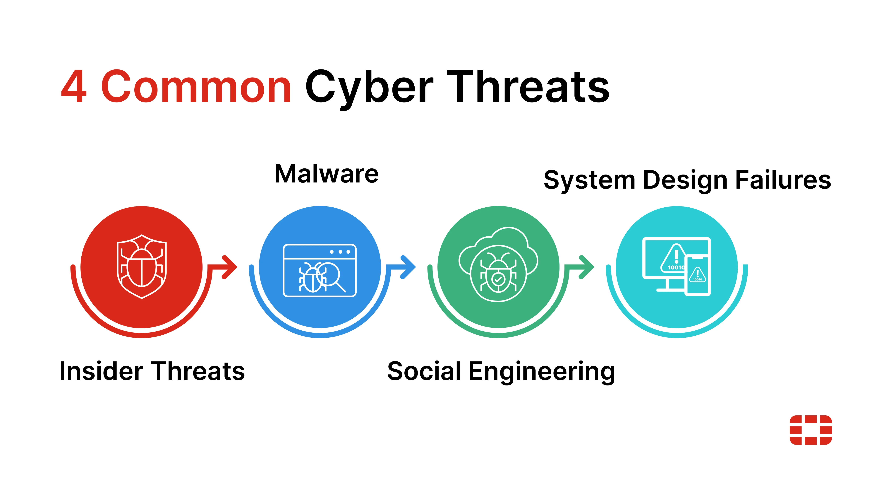

System Design Failure
System Design Dailure is the 4th and final common cyber threat. It refers to the weaknesses/flaws that are present
in the way a system has been structured during the planning and developing stage. Unlike external attacks these
are often unintentional and caused by poor planning or a lack of security features. This creates vulnerabilities in
the system which hackers are able to exploit or lead to breakdowns when under too much pressure.
Further Explanation/Examples
Security must be built from the start of a design. The developmental phase is the most important stage in a systems
lifespan, it shouldn't be added as an afterthought. For example, you design a website but it has no input validation.
This makes it extremely vulnerable for attacks to occur, particularly SQL injections, where they can input malicious
code and run it before you even realise. Another example is neglecting data backup systems which can lead to data losses
after a big crash. Or maybe you have weak access controls leading to anyone in the system having the ability to view and/or
change sensitive data. Many cyber breaches aren't caused by hackers but instead design oversights.
Key Points that Lead to Design Failure
- Poor planning: Skipping security checks during design assessments
- Lack of adaptability: Systems that cannot handle growth or deman surges lead to crashes
- Weak integration: Combining new and old systems without proper compatability
- Improper testing: No stress or pentration testing before launch
- Ignoring user behaviour: Systems that don't account for user mistakes (weak passwords, etc.)